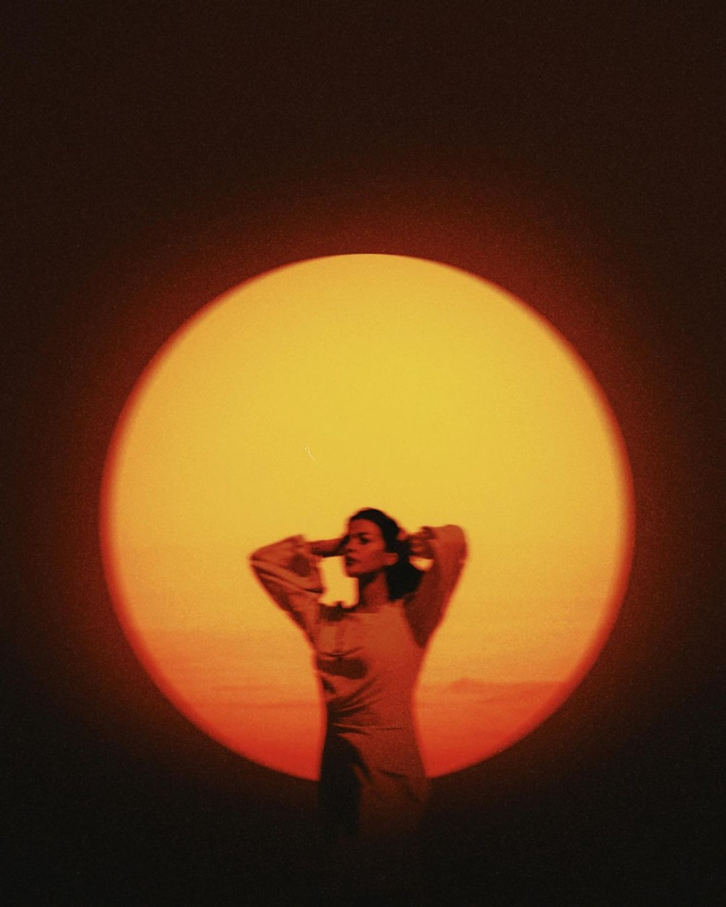
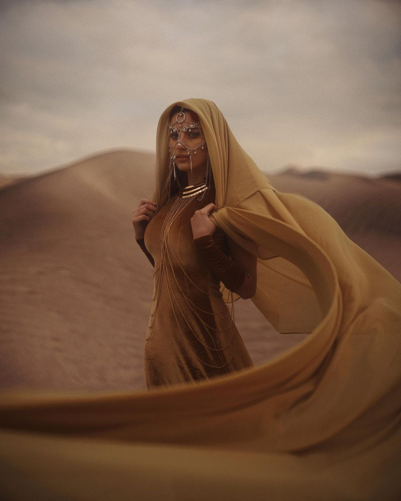
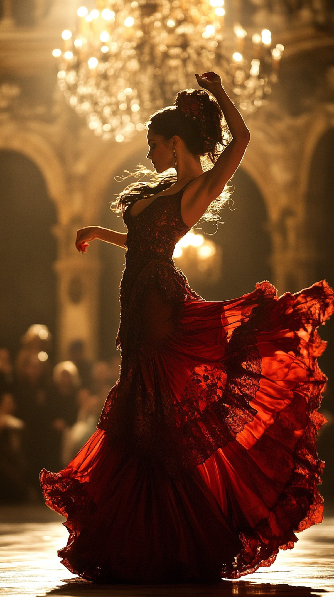
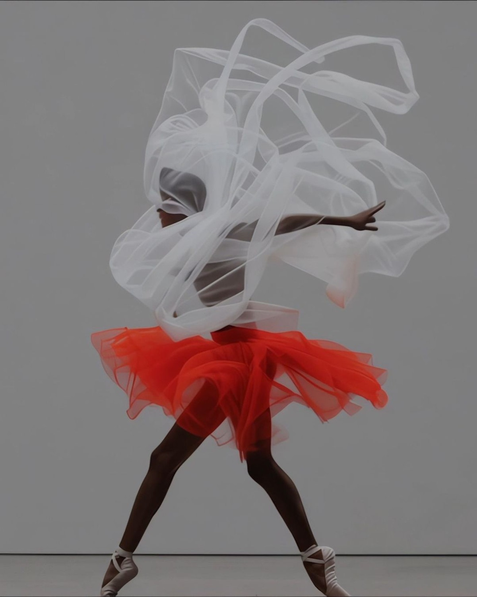
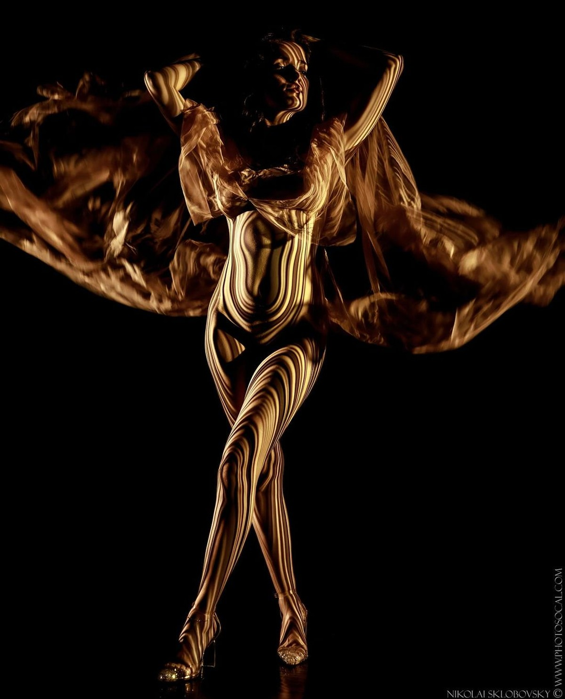
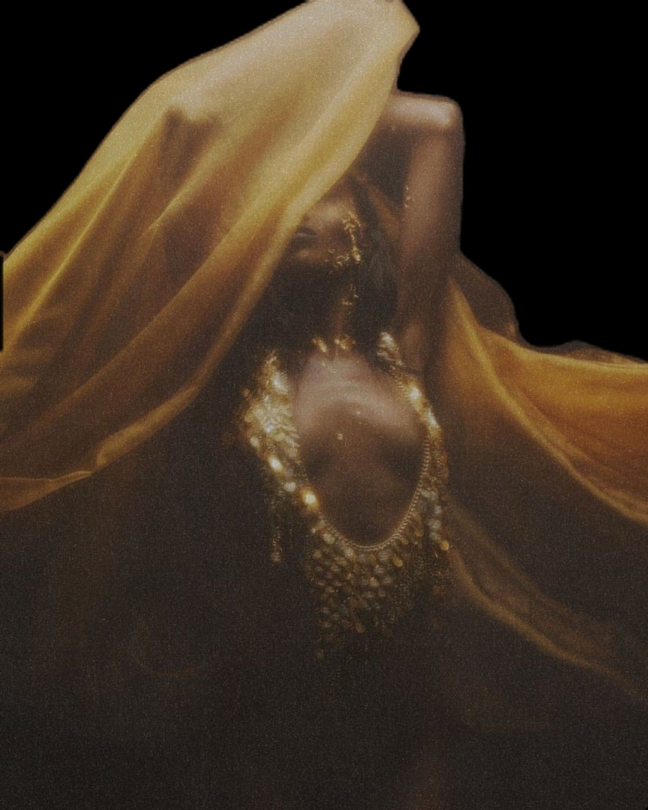
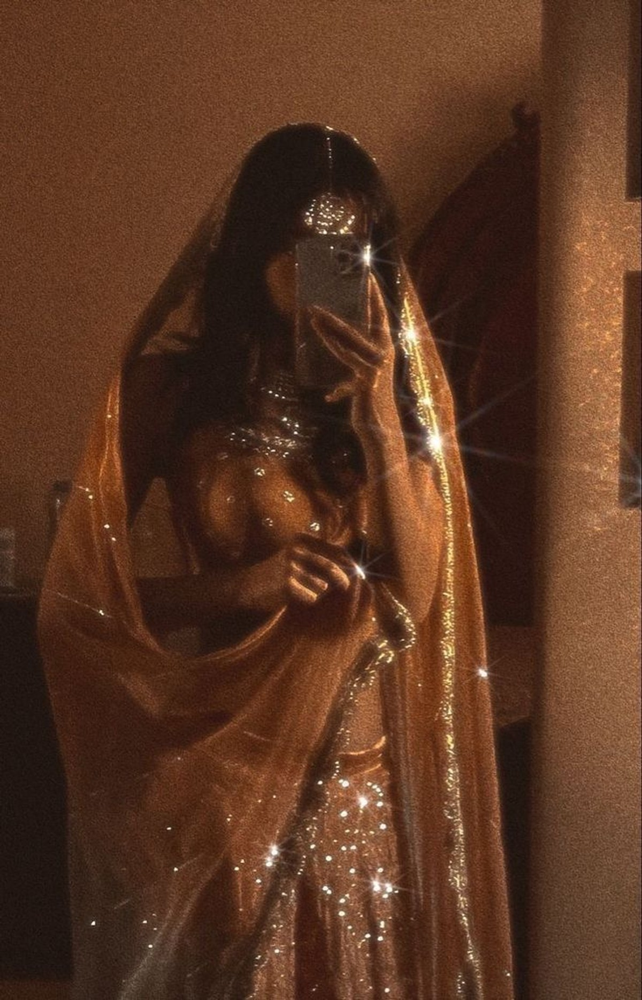

The image stays controlled. The story stays open.
Performance Icon
Badra is a global artist, actress, and performer.
Live Performance
Acting
Teaching


Identity
Presence, Work, and Vision
Badra moves through performance, acting, teaching, and business with the authority of a self-made icon. Known internationally first as a dancer, her world now extends across stage, screen, workshops, event creation, and creative leadership. What connects every lane is the same force: visual presence, professional rigor, and a disciplined mind behind the image.
Private Events
Editorial Productions
Screen Work
International Workshops
Festival Invitations
Creative Collaborations
Private Events
Editorial Productions
Screen Work
International Workshops
Festival Invitations
Creative Collaborations
Services
Ways to Work With Badra
Five clear booking routes, each with its own atmosphere, scope, and professional entry point.

Live Performance
Headline stage work for festivals, private events, and high-visibility cultural bookings.
Acting
Screen presence for television, film, camera-led storytelling, and image-driven work.

Event Creator
Immersive concepts shaped around atmosphere, choreography, presence, and overall experience.

Creative Direction
Visual leadership for concepts, image worlds, content, products, and brand-facing ideas.

Teaching
Warm mentorship through workshops, intensives, private coaching, and international education.
Press
In the Press
Media visibility, selected mentions, and editorial access remain structured and selective. The archive holds the broader story. The homepage only opens the door.
Open the Press ArchiveGlobal Presence
A moving presence across selected cities and invitations.
Touring signals, workshops, and cultural appearances live across a growing international route, with Cairo, Paris, and London already shaping the visible map.
Cairo
Paris
London
Selected Private Destinations
View Global Presence
Cairo
Paris
London
Private Routes
Calendar
Where She Moves Next
Upcoming movement stays selective here. The full calendar lives on its own page, together with the direct inquiry route.
Private guidance, cultural immersion, and focused artistic access in the city.
Performance-led programming for a more intimate audience and visual capture setting.
Selective availability for premium events, international workshops, and custom appearances.
Shop
A quieter route into the world.
The shop is its own destination for online classes, selected objects, and future releases. It stays present without interrupting the main booking logic of the site.
Some things are not worn. They are carried.
